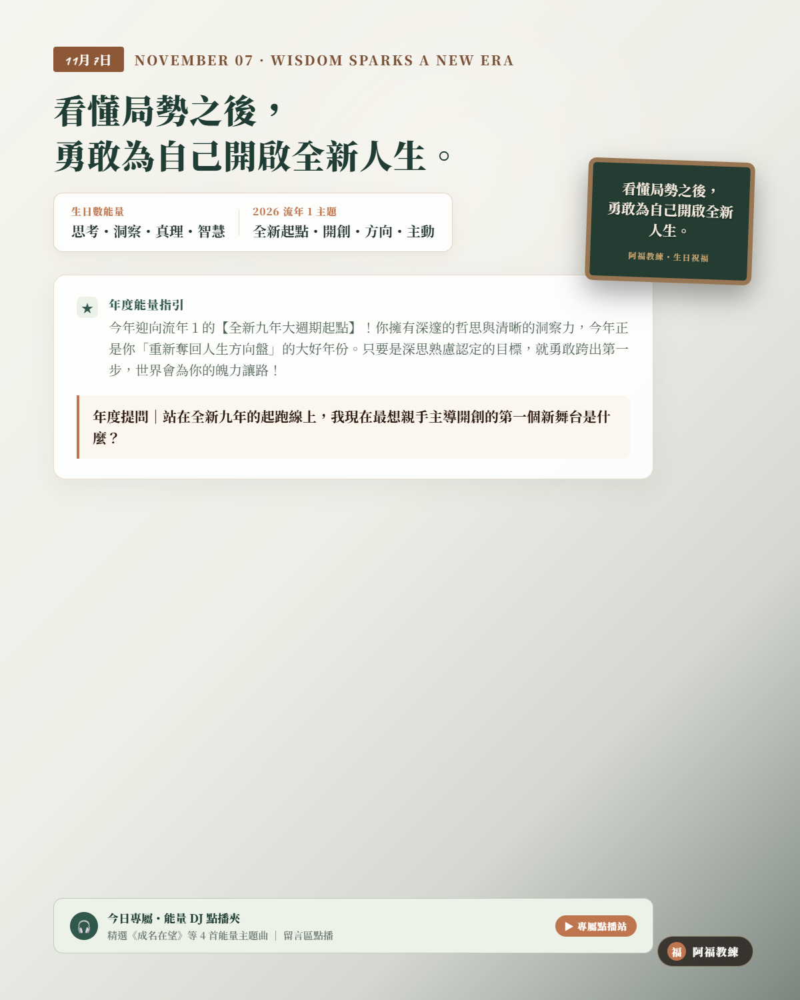

NOVEMBER 07 · WISDOM SPARKS A NEW ERA
11/07 壽星
生日快樂
「看懂局勢之後，勇敢為自己開啟全新人生。」
生日數能量：思考・洞察・真理・智慧
流年 1 主題：全新起點・開創・方向・主動
A YEAR OF SPECIAL MASTERY
重新奪回人生方向盤，在全新起跑線上領先出發
今年迎向流年 1 的【全新九年大週期起點】！你擁有深邃的哲思與清晰的洞察力，但在過去你可能習慣當個冷靜的軍師或觀察者；今年宇宙正式把發令槍交到你手上——這是你「親自下場、做自己主人」的大好年份！不要再等完全準備好才出發，相信你的直覺與智謀，勇敢跨出第一步，世界會為你的開拓魄力讓路！
年度提問｜「站在全新九年的起跑線上，我現在最想親手主導開創的第一個新舞台是什麼？」
YOUR ENERGY DJ · 7 號人的流年 1 能量點播站
當理性深思的 7 號人，走進先鋒開創的流年 1
身為天生看穿本質、重視邏輯與懷疑精神的 7 號人，你的強項在於智謀，但你的卡點往往是「想得太多、行動太慢、害怕不確定」；然而今年走入「流年 1」的起跑節奏，宇宙給你的課題是「立刻出發」。當習慣在場邊分析局勢的你，遇上需要衝鋒陷陣的年份，容易出現想太多而錯失良機的猶豫。今天 DJ 特別為 7 號人的你精選流年 1 開創歌單——為你的大腦注入行動燃料，親自上場主導局勢！
LIFE NUMBER 1 · CLASSROOM PLAYLIST
1 號人課堂激勵與歡唱歌單（給 7 號人的流年 1 開創歌單）
這份歌單來自阿福教練生命靈數課堂中，專為「自我啟動、先鋒魄力、打破常規與自主領導」所調配的經典曲目。習慣深思熟慮的 7 號壽星，在進入流年 1 的全新九年大運起跑線時，聽這 8 首歌，就像為智慧大腦接通行動高壓電——擺脫猶豫與退縮，昂首挺胸開創屬於你的輝煌時代！
- 01我的未來不是夢張雨生｜經典合唱・啟動與自我信念：不被辛苦擊倒，認真過好每一分鐘，爆發強大行動力（YouTube 搜尋）
- 02倔強五月天｜高能量激勵・自主與不對自己妥協：誠實面對自己、堅持走自己的路，展現強大自主性（YouTube 搜尋）
- 03頑固五月天｜高能量激勵・魄力與長期堅持：把夢想堅持到底，在目標清楚的同時保持堅毅（YouTube 搜尋）
- 04朋友周華健｜經典合唱・引領同行者：領導的底氣來自一路相挺的夥伴，從我來衝走向我們一起走（YouTube 搜尋）
- 05蝸牛周杰倫｜故事感敘事・穩定累積的開創：開創不只靠爆發力，也靠一步一步堅持往上爬的耐心（YouTube 搜尋）
- 06山丘李宗盛｜成熟領導・回望來時路保持謙遜，從純粹衝刺走向穩重大器的成熟視野（YouTube 搜尋）
- 07愛拼才會贏葉啟田｜台語經典・敢拚敢闖的先鋒氣魄，失意時不怨嘆，重新站起來勇敢行動（YouTube 搜尋）
- 08稻香周杰倫｜收束收尾・知足與回到初心，讓先鋒開創的能量回到溫暖與感恩，照亮同行者（YouTube 搜尋）
歌單依《生命靈數1號人_激勵九首與歡唱點播歌單》整理。點播連結均為 YouTube 官方影音搜尋結果；播放時請依授課場地與著作權規範使用。
願你帶著前瞻遠見，在全新起點上大展身手、再登高峰。
👉 11/07 壽星快來留言【🚀】！為新的一歲許下最棒的願望！
#11月7日生日快樂 #生命靈數 #生日數7 #流年1 #阿福教練